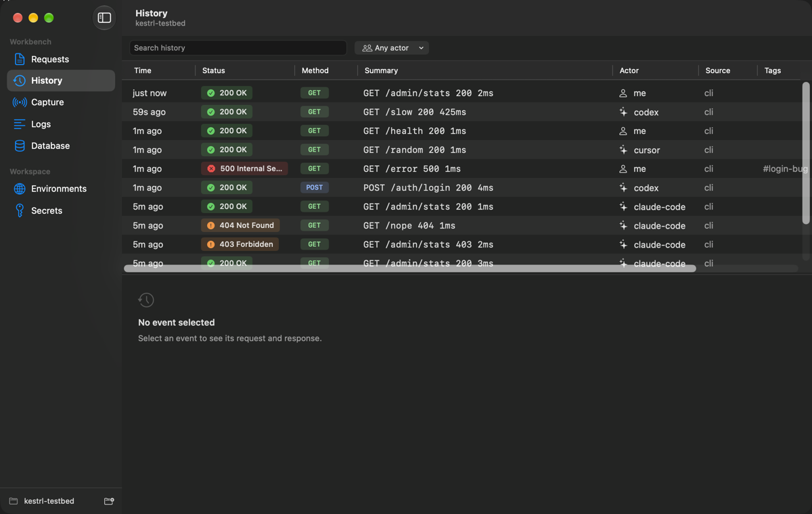

One tool instead of four
Kestrl replaces the API client, the log tabs, the database GUI and the traffic inspector with one tool. Send requests, read service logs, query Postgres and inspect traffic from the CLI or macOS app.
A local workbench for backend developers and their agents.
curl -fsSL https://kestrl.adityakinjawadekar.com/install.sh | sh
Set up Kestrl for me: a local backend workbench with a `kestrl` CLI and an agent skill. 1. Install the CLI with `curl -fsSL https://kestrl.adityakinjawadekar.com/install.sh | sh` (or `brew install adityaamitk/tap/kestrl` if Homebrew is installed and I prefer it). Run `kestrl --version`. If `~/.local/bin` is not on PATH, ask me before adding it to my shell profile. 2. Install the agent skill by downloading https://kestrl.adityakinjawadekar.com/skill/SKILL.md into the place for this agent, and only the ones that apply: - Claude Code: ~/.claude/skills/kestrl/SKILL.md - Codex: ~/.codex/skills/kestrl/SKILL.md - Cursor: .cursor/rules/kestrl.mdc in the current project 3. Do not create, read or print any secrets. Do not change the system proxy, install certificates or run captures. 4. Finish with a 3-line summary: the CLI version and path, the skill file paths, and anything you skipped.
Or brew install adityaamitk/tap/kestrl · macOS app
Kestrl replaces the API client, the log tabs, the database GUI and the traffic inspector with one tool. Send requests, read service logs, query Postgres and inspect traffic from the CLI or macOS app.
Agents call kestrl instead of curl. Every request records who ran it: me, Claude Code, Codex or Cursor. Secrets are injected from the Keychain and masked in output, so their values never reach the agent.
No accounts, no cloud sync, no telemetry. History is a local SQLite file, secrets live in the macOS Keychain, and request files are plain TOML you can commit.
Capture traffic from the iOS Simulator, the Android emulator, a browser Kestrl opens, or a plain-HTTP port on localhost. Port capture needs a one-time administrator setup.

$ kestrl send requests/admin/stats.req.toml --json
{
"body": {
"memory_mb": 21,
"users": 0
},
"error": null,
"headers": {
"connection": "keep-alive",
"content-type": "application/json",
"date": "Sun, 25 Oct 2026 06:12:13 GMT",
"keep-alive": "timeout=5",
"transfer-encoding": "chunked",
"x-request-id": "c744529a"
},
"id": "01M5RV0BGGHDCJZAYM1PQFFXCB",
"ms": 2,
"redacted": [
"testbed_admin_token"
],
"status": 200
}
$ kestrl history --limit 5
01M5RV0BGGHDCJZAYM1PQFFXCB 0s me GET /admin/stats 200 2ms
01M5RTYKFHSHR46BGVXAMGHR7C 57s codex GET /slow 200 425ms
01M5RTYK1ZQ219393FFFBFC4X7 57s me GET /health 200 1ms
01M5RTYK1NBZDPYN879AWJZV3J 57s cursor GET /random 200 1ms
01M5RTYK1C9B8XW6NHSGQ1GKW3 57s me GET /error 500 1ms #login-bug